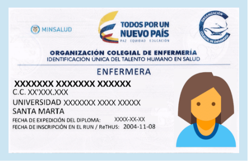
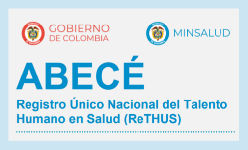
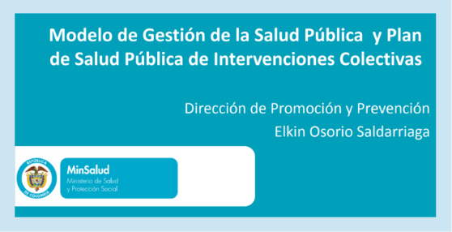

1. Modificaciones en el sistema general de seguridad social en salud
1.1 Ley número 1122 de 2007
1.2 Objeto
La presente ley tiene como objeto realizar ajustes al Sistema General de seguridad Social en Salud, teniendo como prioridad el mejoramiento en la prestación de los servicios a los usuarios. Con este fin, se hacen reformas en los aspectos de:
-
Dirección.
-
Universalización.
-
Financiación.
-
Equilibrio entre los actores del sistema.
-
Racionalización, y mejoramiento en la prestación de servicios de salud.
-
Fortalecimiento en los programas de salud pública y de las funciones de, inspección, vigilancia y control.
-
La organización y funcionamiento de redes para la prestación de servicios de salud.
Estimado aprendiz, Una vez que visualice los dos videos, debe realizar una infografía donde plasme las ideas más importantes relacionadas con la ley 1122 de 2007.
El siguiente enlace lleva a un video en donde se presenta una breve explicación sobre los componentes de la ley 1122 de 2007.
El siguiente enlace lleva a un video donde se presenta una visión con relación a los principales cambios de la Ley 1122 del 2007.
2. Régimen de pagos compartidos y cuotas moderadoras dentro del sistema general de seguridad social en salud
De conformidad con el numeral 3 del artículo 160 de la Ley 100 de 1993, y el parágrafo del artículo 3º del Acuerdo 260 del Consejo Nacional de Seguridad Social en Salud - CNSSS, es deber del afiliado cotizante y de los beneficiarios cancelar las cuotas moderadoras y los copagos correspondientes.
De esta manera, el afiliado cotizante, tan solo tendrá obligación de cancelar cuotas moderadoras, por los servicios sujetos a estas, y no copagos, los cuales solo se cobrarán al cotizante por la atención de sus beneficiarios.
Cuota moderadora
Las cuotas moderadoras tienen por objeto regular la utilización del servicio de salud y estimular su buen uso, promoviendo en los afiliados cotizantes y a sus beneficiarios, la inscripción en los programas de atención integral desarrollados por las EPS en el Régimen contributivo.
Copago
Son los aportes en dinero que corresponden a una parte del valor del servicio demandado y tienen como finalidad ayudar a financiar el sistema. Los copagos se aplican única y exclusivamente a los afiliados beneficiarios del Régimen Contributivo y los afiliados al Régimen Subsidiado, según lo establecido en el artículo 3º y 11 del Acuerdo 260 del Consejo Nacional de Seguridad Social en Salud - CNSSS.
De esta manera, el afiliado cotizante, tan solo tendrá obligación de cancelar cuotas moderadoras, por los servicios sujetos a estas, y no copagos, los cuales solo se cobrarán al cotizante por la atención de sus beneficiarios.
En la aplicación de cuotas moderadoras y copagos, deberán respetarse los siguientes principios básicos:
Equidad.
Las cuotas moderadoras y los copagos en ningún caso pueden convertirse en una barrera para el acceso a los servicios, ni ser utilizados para discriminar la población debido a su riesgo de enfermar y morir, derivado de sus condiciones biológicas, sociales, económicas y culturales.
Información al usuario.
Las EPS o EPSS deberán informar ampliamente al usuario sobre la existencia, el monto y los mecanismos de aplicación y cobro de cuotas moderadoras y copagos, a que estará sujeto en la respectiva entidad.
| CUOTA MODERADORA | |
| Rango de ingreso en SMLMV | Cuota en % del SMLDV |
|
Menor a 2 SMLMV |
11.70% |
|
Entre 2 y 5 SMLMV |
46.10% |
|
Mayor 5 SMLMV |
121.50% |
En todo caso, las entidades deben publicar su sistema de cuotas moderadoras y copagos anualmente. Hacer público en un medio masivo de información, por lo menos una vez al año, su plan general de cuotas moderadoras y copagos aplicables a sus afiliados, o cualquier modificación a este.
| CÁLCULO DE COPAGO | ||
| Para efectuar el cálculo respectivo del copago, siga el siguiente paso. |
||
| El valor total de la factura al servicio que corresponda, aplíquele el porcentaje, según el régimen y el nivel de ingreso al que pertenece el usuario. |
||
|
RÉGIMEN |
PORCENTAJE |
FÓRMULA |
|
Contributivo |
11.50% |
Valor x 0.115 |
|
Contributivo |
17.30% |
Valor x 0.175 |
|
Contributivo |
23.00% |
Valor x 0.23 |
|
Subsidiado |
10.00% |
Valor x 0.10 |
Aplicación general.
Las EPS o EPSS aplican sin discriminación alguna a todos los usuarios tanto los copagos como las cuotas moderadoras establecidos, de conformidad con lo dispuesto en el Acuerdo en mención.
No simultaneidad.
En ningún caso pueden aplicarse simultáneamente para un mismo servicio copagos y cuotas moderadoras.(vargas, 2012)
Consulta externa, general, médica, paramédica y especializada.
Los servicios de odontología.
Laboratorios.
Medicamentos.
Imágenes diagnósticas por imagenología.
En la aplicación de cuotas moderadoras y copagos, deberán respetarse los siguientes principios básicos:
Niños, niñas y adolescentes de nivel Sisbén 1 y 2
Para los niños, niñas y adolescentes de nivel Sisbén 1 y 2 con discapacidades físicas, sensoriales y cognitivas, enfermedades catastróficas y ruinosas certificadas por el médico tratante, conforme a lo establecido por el artículo 18 de la Ley 1438 de 2011.
Niños, niñas y adolescentes víctimas de violencia
Para los niños, niñas y adolescentes víctimas de violencia física o sexual y todas las formas de maltrato que estén certificadas por la autoridad competente, según el artículo 19 de la Ley 1438 de 2011.
Mujeres víctimas de violencia
Para las mujeres víctimas de violencia física o sexual, certificados por la autoridad competente. La prestación del servicio médico incluirá la atención psicológica, psiquiátrica y la habitación provisional, en los términos de la Ley 1258 de 2007, de acuerdo con lo definido por el artículo 54 de la Ley 1438 de 2011.
Los copagos, a que están obligados los beneficiarios en el régimen contributivo y los afiliados al régimen subsidiado son:
Los servicios y procedimientos no quirúrgicos del POS que no tengan que ver con acciones de promoción y prevención, programas de atención materno infantil, programas de control de enfermedades transmisibles, enfermedades catastróficas o de alto costo, la atención inicial de urgencias, consulta externa médica, odontológica, paramédica y de medicina alternativa aceptada, consulta externa por médico especialista, fórmula de medicamentos para tratamiento ambulatorio, exámenes de diagnóstico por laboratorio clínico, ordenados en forma ambulatoria y que no requieran autorización adicional a la del médico tratante, y exámenes de diagnóstico por imagenología ordenados en forma ambulatoria y que no requieran autorización adicional a la del médico tratante.
Los servicios del POS de atención hospitalaria y los procedimientos de cirugía que no tengan que ver con acciones de promoción y prevención, programas de atención materno infantil, programas de control de enfermedades transmisibles, enfermedades catastróficas de alto costo, la atención inicial de urgencias.
Los procedimientos no quirúrgicos necesarios para rehabilitación, como las terapias (física, respiratoria, ocupacional, de lenguaje, entre otras).
Las imágenes diagnósticas invasivas tales como el procedimiento de endoscopia, rectoscopia y medios de contraste.
Los procedimientos de odontología diferente a consulta, tales como la obturación y la endodoncia por lo que deberán aplicarse copagos a todos los servicios contenidos en el plan obligatorio de salud.
Los servicios de promoción y prevención.
Los programas de control en atención materno infantil.
Los programas de control en atención de las enfermedades transmisibles.
Las enfermedades catastróficas o de alto costo. La atención inicial de urgencias.
Los servicios sujetos a cuotas moderadoras, Para los niños, niñas y adolescentes de nivel Sisbén 1 y 2 con enfermedades catastróficas certificadas por el médico tratante, conforme a lo establecido por el artículo 18 de la Ley 1438 de 2011.
Para los niños, niñas y adolescentes víctimas de violencia física o sexual y todas las formas de maltrato que estén certificadas por la autoridad competente, según el artículo 19 de la Ley 1438 de 2011.
Para las mujeres víctimas de violencia física o sexual, certificados por la autoridad competente. La prestación del servicio médico incluirá la atención psicológica y psiquiátrica y la habitación provisional, en los términos de la Ley 1258 de 2007, de acuerdo con lo definido por el artículo 54 de la Ley 1438 de 2011.
El monto de copagos se encuentra limitado por dos topes, no puede ser ilimitado. Esto es, el máximo a cobrar por la atención de un mismo evento y el máximo a cobrar por año calendario, según lo establecido por los artículos 9º y 10 del Acuerdo 260 del Consejo Nacional de Seguridad Social en Salud - CNSSS, entendiendo para el efecto “por la atención de un mismo evento”, “el manejo de una patología específica el paciente en el mismo año calendario” (parágrafo, artículo 9º Acuerdo 260 Consejo Nacional de Seguridad Social en Salud - CNSSS)
Los copagos en el régimen contributivo se pagarán según el ingreso base de cotización del afiliado cotizante teniendo en cuenta el valor de las tarifas pactadas por la EPS con los PSS. De esta manera, el valor por concepto de copagos para afiliados cuyo ingreso base de cotización sea menor a dos (2) salarios mínimos legales mensuales vigentes será el 11.5% de las tarifas pactadas por la EPS con las IPS, para afiliados cuyo ingreso base de cotización esté entre dos y cinco salarios mínimos legales mensuales vigentes, el 17.3% de las tarifas pactadas por la EPS con las IPS, y para afiliados cuyo ingreso base de cotización sea mayor a cinco (5) salarios mínimos legales mensuales vigentes, el 23% de las tarifas pactadas por la EPS con las IPS. (COLOMBIA, 1993) (SALUD, 2004)
| Copagos tope evento y año | |||
| Salario base cotización (en smmlv*) |
Copago (sobre tarifas**) % |
Copago máximo por evento (en smmlv*) % |
Copago máximo anual (en smmlv*) % |
| Menos 2 | 11,5 | 28,7 | 57,5 |
| De 2 a 5 1 | 7,3 | 115 | 230 |
| Más de 5 | 23 | 230 | 460 |
Copagos en el régimen subsidiado
Los copagos a que están obligados los afiliados al régimen subsidiado, son los aportes en dinero que corresponden a una parte del valor del servicio demandado y tienen como finalidad ayudar a financiar el sistema, de conformidad con el artículo 2º del Acuerdo 260 del Consejo Nacional de Seguridad social en Salud - CNSSS. Estos, según artículo 7º del Acuerdo 260 del Consejo Nacional de Seguridad Social en Salud - CNSSS, se aplican a:
Los servicios y procedimientos no quirúrgicos del Plan Obligatorio de Salud subsidiado – POSS que no tengan que ver con acciones de promoción y prevención, programas de atención materno infantil, programas de control de enfermedades transmisibles, enfermedades catastróficas o de alto costo, la atención inicial de urgencias, consulta externa médica, odontológica, paramédica y de medicina alternativa aceptada, consulta externa por médico especialista, fórmula de medicamentos para tratamiento ambulatorio, exámenes de diagnóstico por laboratorio clínico ordenados en forma ambulatoria y que no requieran autorización adicional a la del médico tratante, y exámenes de diagnóstico por imagenología, ordenados en forma ambulatoria y que no requieran autorización adicional a la del médico tratante.
Los servicios del POSS de atención hospitalaria y los procedimientos de cirugía que no tengan que ver con acciones de promoción y prevención, programas de atención materno infantil, programas de control de enfermedades transmisibles, enfermedades catastróficas o de alto costo, la atención inicial de urgencias.
Los procedimientos no quirúrgicos necesarios para rehabilitación como las terapias física, respiratoria, ocupacional, de lenguaje, entre otras.
Las imágenes diagnósticas invasivas tales como el procedimiento de endoscopia, rectoscopia y medios de contraste.
Los procedimientos de Odontología, diferente a consulta, tales como la obturación y la endodoncia.
Por esto, deberán aplicarse copagos a todos los servicios contenidos en el Plan Obligatorio de Salud Subsidiado, con excepción de los estipulados en los artículos 18, 19 y 54 de la Ley 1438 de 2011, y 7º, Acuerdo 260 del Consejo Nacional de Seguridad Social en Salud - CNSSS.
3. Disposiciones para el no cobro de copagos a poblaciones especiales en el régimen subsidiado
Las poblaciones a las cuales aplica lo señalado en este artículo son:
Población infantil abandonada.
Población indigente.
Población en condiciones de desplazamiento forzado.
Población indígena.
Población desmovilizada.
Personas de la tercera edad en protección de ancianitos en instituciones de asistencia social. Así mismo, no será objeto del cobro de copagos la población rural migratoria.
La población ROM que sea asimilable al SISBEN I, situación que deberá identificarse en el correspondiente listado censal.
Artículo segundo. - acceso a los servicios de salud. - Con el objeto de facilitar el acceso a los servicios de salud de las poblaciones de que trata el presente Acuerdo, recomendar a la Superintendencia Nacional de Salud que adopte las medidas necesarias para que en el carné de afiliación que deben entregar las Entidades Promotoras de Salud del Régimen Subsidiado-EPS-S se señale expresamente que el portador se encuentra exento del cobro de copagos. Mientras dichas medidas se hacen efectivas, las EPS-S deberán implementar mecanismos que permitan identificar claramente que estas poblaciones se encuentran exentas de copagos.
4. Exención concurrente del pago de cuotas moderadoras, y copagos por leyes especiales
5. Plataformas de salud
Las plataformas digitales son un medio para promocionar un servicio, en nuestro medio permiten mejorar la calidad en la atención a los usuarios. Es parte esencial de nuestra vida cotidiana.
En el siguiente enlace se encuentra un video que presenta una breve descripción de cómo ha evolucionado el mundo gracias a las tecnologías, como el envío de facturas, solicitar un taxi o pagos por internet.
SISPRO - Sistema Integrado de información de la Protección Social de Información Oportuna, suficiente y estandarizado para la toma de decisiones del Sector Salud y Protección Social, centrada en el Ciudadano. El SISPRO está conformado por bases de datos y sistemas de información del sector sobre oferta y demanda de servicios de salud, calidad de los servicios, aseguramiento, financiamiento, promoción social. A continuación, se describen cada uno de los elementos del sistema. (Texto tomado de
https://www.sispro.gov.co/Pages/Home.aspx)A continuación, se describen cada uno de los elementos del sistema
En la siguiente presentación en prezi encontrará de una manera más didáctica qué es SISPRO (socha, 2017)
La Administradora de los Recursos del Sistema General de Seguridad Social en Salud -ADRES- es una entidad adscrita al Ministerio de Salud y Protección Social, con personería jurídica, autonomía administrativa y financiera y patrimonio independiente.
La Base de Datos Única de Afiliados – BDUA, contiene la información de los afiliados plenamente identificados, de los distintos regímenes del Sistema General de Seguridad Social en Salud.
Para hacer una consulta en ADRES, deberás seguir los 3 pasos a continuación:
-
Seleccione su tipo de documento y digite su número de identificación.
-
Escriba el código de verificación.
-
Luego de clic en el botón “consultar” y se le mostrará la siguiente página de resultados.
6. Sobre el sistema único de habilitación
Según el Ministerio de Salud y con el Artículo 2.5.1.3.1.1 del Decreto 780 de 2016, el Sistema Único de Habilitación es el conjunto de normas, requisitos y procedimientos mediante los cuales se establece, registra, verifica y controla el cumplimiento de las condiciones básicas de capacidad tecnológica y científica, de suficiencia patrimonial y financiera y de capacidad técnico administrativa, indispensables para la entrada y permanencia en el Sistema, los cuales buscan dar seguridad a los usuarios frente a los potenciales riesgos asociados a la prestación de servicios y son de obligatorio cumplimiento por parte de los prestadores de servicios de salud y las empresas administradoras de planes de beneficios (EAPB). (salud, s.f.)
Con el fin de definir los procedimientos y condiciones de inscripción y habilitación para los prestadores de servicios de salud, el Ministerio de Salud y Protección Social, emitió el 28 de mayo de 2014 la Resolución 2003. Derogada por el art. 27 de la Resolución 3100 de 2019 que nos indica:
Dentro de los principales cambios encontramos:
-
Mejora la estructura general de la presentación de la norma.
-
Mayor claridad en las definiciones.
-
Activación del REPS (Base de datos de las entidades departamentales y distritales de salud, en la cual se efectúa el registro de los Prestadores de Servicios de Salud que se encuentren habilitados.
-
Nuevos requisitos.
Generalidades del proceso de habilitación
En esta página podrá encontrar temas de su interés con relación al proceso de habilitación
-
Normas vigentes.
-
Antecedentes normativos.
-
Documentos técnicos.
-
Paquetes instruccionales de las buenas prácticas para la seguridad del paciente.
-
Registro Especial de Prestadores de Salud.
Normatividad en el sector salud
En el 2007 la resolución 2680 de 2007 se modifica parcialmente la Resolución 1043 de 2006 y se dictan otras disposiciones.
En el 2007 la resolución 3763. Por la cual se modifican parcialmente las Resoluciones 1043 y 1448 de 2006 y la Resolución 2680 de 2007 y se dictan otras disposiciones.
Posteriormente con la resolución 1441 de 2013. Definen los procedimientos y condiciones que deben cumplir los Prestadores de Servicios de Salud para habilitar los servicios y se dictan otras Disposiciones. Derogando las resoluciones Resolución 4445 de 1996, Resolución 1043 de 2006 y Resolución 1448 de 2006.
Resolución 2003 de 2014 se definen los procedimientos y condiciones de inscripción de los Prestadores de Servicios de Salud y de habilitación de servicios de salud.
En el 2015 con la resolución 226. Por medio de la cual se adiciona el numeral 2.2 del Manual de Inscripción de Prestadores y Habilitación de Servicios de Salud, adoptado mediante la Resolución 2003 de 2014, en el sentido de establecer un trámite especial para las Instituciones Prestadoras de Servicios de Salud intervenidas por la Superintendencia Nacional de Salud.
Posteriormente se modifica con la resolución 3678 de 2014 Por la cual se modifica la Resolución 2003 de 2014.
En el 2015 la circular 0036 Inscripción y habilitación en el registro especial de prestadores de servicios de salud de las instituciones públicas y privadas que prestan el servicio público de bienestar familiar.
Posteriormente en el 2015 con la resolución 5158 de 2015 Por la cual se adiciona el artículo 15 de la Resolución 2003 de 2014.
Con la resolución 1416 de 2016 Por la cual se adiciona el Manual de Inscripción de Prestadores y Habilitación de Servicios de Salud adoptado por la Resolución 2003 de 2014.
Finalmente, La Resolución 2003/2014 es derogada por la Resolución 3100 de 2019 Por la cual se definen los procedimientos y condiciones de inscripción de los prestadores de servicios de salud y de habilitación de los servicios de salud y se adopta el Manual de Inscripción de Prestadores y Habilitación de Servicios de Salud (Ministerio de Salud, s.f.)
Sistema Único de Habilitación.
La Resolución 2003/2014 es derogada por la resolución 3100 de 2019 nos indica que los estándares que deben cumplir los Prestadores de Servicios de Salud son 7 y son de obligatorio cumplimiento. Estos son:
Talento humano
Son las condiciones mínimas para el ejercicio profesional y ocupacional del Talento Humano asistencial y la suficiencia de este recurso para el volumen de atención.
Infraestructura
Son las condiciones y el mantenimiento de la infraestructura de las áreas asistenciales o características de ellas, que condicionen procesos críticos asistenciales.
Dotación
Población en condiciones de desplazamiento forzado.
Interdependencia
Es la existencia o disponibilidad de servicios o productos, propios o contratados de apoyo asistencial o administrativo, necesarios para prestar en forma oportuna, segura e integral los servicios ofertados por un prestador.
Procesos prioritarios
Es la existencia, socialización y gestión del cumplimiento de los principales procesos asistenciales, que condicionan directamente la prestación con calidad y con el menor riesgo posible, en cada uno de los servicios de salud.
Historia clínica y registros
Es la existencia y cumplimiento de procesos, que garanticen la historia clínica por paciente y las condiciones técnicas de su manejo y el de los registros de procesos clínicos diferentes a la historia clínica que se relacionan directamente con los principales riesgos propios de la prestación de servicios.
Medicamentos, dispositivos médicos e insumos
Es la existencia de procesos para la gestión de medicamentos, homeopáticos, fitoterapéuticos, productos biológicos, componentes anatómicos, dispositivos médicos, reactivos de diagnóstico in vitro, elementos de rayos X y de uso odontológico, así como de los demás insumos asistenciales que utilice la institución incluidos los que se encuentran en los depósitos o almacenes del prestador, cuyas condiciones de selección, adquisición, transporte, recepción, almacenamiento, conservación, control de fechas de vencimiento, control de cadena de frío, distribución, dispensación, uso, devolución, seguimiento al uso y disposición final, condicionen directamente riesgos en la prestación de los servicios.
Estimado aprendiz
En el siguiente enlace se encuentra un video sobre Sistema Único de Habilitación podrá visualizar de una manera más clara que significa este proceso y explica cada uno de los estándares que se deben cumplir.
¿Qué es el ReTHUS?
Es la inscripción en el sistema de información definido por el Ministerio de Salud y Protección Social, del talento humano en salud que cumple con los requisitos establecidos en la Ley 1164 de 2007, proceso con el cual se entiende que dicho personal se encuentra autorizado para el ejercicio de una profesión u ocupación del área de la salud.
El ReTHUS señala también la información sobre las sanciones del talento humano en salud que, según el caso, reportan los Tribunales ético-disciplinarios del área de la salud, autoridades competentes o los particulares a quienes se les deleguen las funciones públicas.
El siguiente enlace se presenta un video que explica de una manera más clara que el ReTHUS es una inscripción que deben realizar todos los prestadores de salud para quedar registrado en su base de datos.
7. Sobre la operatividad del sistema único de acreditación
Según el Decreto 780 de 2016
“El Sistema Único de Acreditación en Salud. Es el conjunto de procesos, procedimientos y herramientas de implementación voluntaria y periódica, los cuales están destinados a comprobar el cumplimiento gradual de niveles de calidad superiores a los requisitos mínimos obligatorios, para la atención en salud, bajo la dirección del Estado y la inspección, vigilancia y control de la Superintendencia Nacional de Salud”.
Sistema único de acreditación
8. Cómo implementar el PAMEC con enfoque en seguridad del paciente
PAMEC es el Programa de Auditoría para el Mejoramiento de la Calidad en la Atención en Salud – PAMEC.
Es el mecanismo sistemático y continuo de evaluación y mejoramiento de la calidad observada respecto de la calidad esperada de la atención de salud que reciben los usuarios (Ministerio de Salud, 2006).
La Resolución 1043 de 2006 establece que el Programa de Auditoria para el Mejoramiento de la Calidad de la Atención en Salud, PAMEC “es la forma a través de la cual la institución implementará el componente de Auditoria para el Mejoramiento de la Calidad.”
En el siguiente enlace se encuentra un video donde se da una explicación más detallada de qué es el PAMEC, que cuenta con unos niveles de operación como:
-
Autocontrol
-
Auditoría interna
-
Auditoría externa
9. Plan de intervenciones colectivas – PIC
La Resolución 518 define al PIC como un plan complementario al Plan Obligatorio de Salud – POS, que busca impactar positivamente en los determinantes sociales de la salud e incidir en sus resultados.
Es un plan de beneficios compuesto por intervenciones de promoción de la salud y gestión del riesgo, las cuales se enmarcan en las estrategias definidas en el Plan Territorial de Salud (PTS), y buscan impactar positivamente los determinantes sociales de la salud y alcanzar los resultados definidos en el PTS. Comprende un conjunto de intervenciones, procedimientos, actividades e insumos definidos en el anexo técnico de la Resolución 518 de 2015, los cuales se ejecutarán de manera complementaria a otros planes de beneficio. (salud, min salud, s.f.)
10. Servicio al cliente
Según el doctor ALBERTO KOMIYA indica que servicio al cliente es el servicio o atención que una empresa o negocio brinda a sus clientes al momento de atender sus consultas, pedidos o reclamos, venderle un producto o entregarle el mismo. (Komiya, 2015)
Para contextualizarnos más, hondáremos en los factores que intervienen en el servicio al cliente: (Komiya, 2015)
Amabilidad
Hace referencia al trato amable, cortés y servicial. Se da, por ejemplo, Cuando el talento humano de la institución saluda al usuario con una buena cara, lo hace sentir que es muy importante para la institución y que estamos interesados en prestarle el mejor servicio y en satisfacerlo antes que en venderle nuestros servicios.
Atención personalizada
Es la atención directa o personal que toma en cuenta las necesidades, gustos y preferencias particulares del cliente. Se da, por ejemplo, cuando un el Profesional de la salud le indica que ingrese a consulta médica y lo acompaña durante todo su proceso.
Rapidez en la atención
Es la rapidez con la que se le toman la solicitud al cliente, se le entrega su producto, la información requerida, o se le atienden sus consultas o reclamos. Se da, por ejemplo, cuando se cuenta con procesos simples y eficientes, cuando se cuenta con un número suficiente de personal, cuando se le capacita al personal para que brinden una rápida atención, etc.
Ambiente agradable
Un ambiente acogedor en donde nuestro usuario se siente a confortable, a gusto tanto con la atención como con la infraestructura. Se da, por ejemplo, cuando los trabajadores le brindan al usuario un trato amable y amigable.
Comodidad
Hace referencia a que se le brinda y como se le brinda al usuario un servicio, cuando visita la institución de salud. Se da, por ejemplo, cuando las instalaciones de la institución cuentan con espacios amplios y cómodos.
Seguridad
Hace alusión a la seguridad que existe en la institución de salud ofreciéndole tranquilidad al paciente cuando lo visita. Se da, por ejemplo, cuando se cuenta con suficiente personal de seguridad, cuando se tienen claramente marcadas las zonas de seguridad, cuando se tienen claramente señalizadas las vías de escape, cuando se cuenta con botiquines médicos, etc.
Higiene
Nos da a entender sobre la limpieza, aseo y cumplimientos de normas de bioseguridad que hay dentro de una institución prestadora de los servicios de salud tanto en infraestructuras como en su recurso humano. Se da, por ejemplo, cuando los baños de la institución se encuentran siempre limpios, con todos sus implementos de higiene como jabón, papel, etc. Pisos y sanitarios aseados
La importancia del servicio al cliente
Cuando un usuario encuentra y recibe un buen servicio, queda satisfecho, esa satisfacción nos permite que regrese y vuelva a utilizar los servicios de salud ofertados por la institución, y que muy probablemente nos recomiende con otros usuarios.
Si un cliente, recibe una mala atención en nuestra institución, no solo dejará de asistir a sus consultas, sino que muy probablemente también hablará mal de nosotros y contará la experiencia negativa a la que fue expuesto.
Si a una mala atención, le sumamos el hecho de que la competencia (otras EPS) cada vez son más en el mercado por lo que ofrecen más beneficios y tecnologías para brindar más calidad en la prestación del servicio. Es posible afirmar que hoy en día es fundamental brindar un buen servicio al cliente si la institución quiere ser competitiva en el mercado.
La misión de cada institución de salud es evitar que al usuario se le preste una mala atención, incentivando así a que deje de utilizar los servicios de salud o pueda llegar a hablar mal de la institución. Se debe procurar porque reciba un buen servicio al cliente, y así lograr su fidelización, la posibilidad de que nos recomiende con otros usuarios.
El buen servicio al cliente debe estar presente en todos los servicios que solicite el usuario. Debe prevalecer la interacción con el usuario, desde el saludo hasta el final de la atención del paciente y su posterior egreso. Para lo cual es necesario capacitar y motivar permanentemente no solo al personal que está en contacto con el usuario sino en general a todo el talento humano de la institución para la prestación de un servicio con calidad.
Las técnicas de servicio al cliente pueden agruparse a grandes rasgos en:
Técnicas de explicación
Aquellas en las que se comunica verbalmente la mayor cantidad de información relevante al usuario para ayudarlo a tomar las decisiones más informadas sobre su consumo.
Técnicas de empatía
Aquellas que brindan al cliente un alto grado de involucramiento de parte de la empresa, que lo hacen sentir.
Técnicas de interrogación
Aquellas que se basan en aplicar al cliente una serie de preguntas (de cuestionario o no) respecto a la materia de sus necesidades, para así brindarle una atención realmente especializada (Raffino, 2020).
Los elementos del servicio al cliente son:
Contacto cara a cara
Es decir, la posibilidad de entrevistarse con el cliente y darle atención personalizada. Esto refuerza la relación con el usuario y le hace sentir escuchado.
Relación clientelar
Fortalecer la relación con nuestro usuario es clave en los servicios de salud, de ella depende la continuidad de los usuarios a la institución.
Correspondencia
La correspondencia entre cliente y empresa es clave para una atención al cliente saludable, ya que fortalece la identificación entre ambos y la resolución de los problemas que se presenten.
Reclamos y cumplidos
El cliente debe contar con alguna línea que le permitan ejercer sus deberes y derechos.
Instalaciones
Debe brindársele al usuario la seguridad y acogida durante su asistencia a la institución (Raffino, 2020).
En el siguiente enlace se encuentra un video que da a conocer la importancia de prestar un servicio al cliente con calidad.
En el siguiente enlace se presenta un video llamado “¡Qué Crees! Servicio al cliente” y muestra lo que no se debe hacer en la atención al usuario.
La calidad de atención en los servicios de salud
A continuación, se encuentra una videoconferencia de la organización panamericana de la salud con intervención de los doctores Luis E, Núñez. Director de promoción de salud de 2015 y Giovanny Guzmán asesor de sistema de la OPS.
11. Satisfacción del cliente
Esta satisfacción del cliente se debe convertir en el punto más importante de una institución, Las decisiones que se tomen desde las gerencias, deben estar enfocadas fundamentalmente en lograr prestarle un servicio con calidad a los usuarios.
Dentro de la estrategia organizacional de cada institución debe estar inmersa la medición, análisis y respuesta continua a la satisfacción del cliente.
Tipos de clientes
Los clientes que tiene una organización pueden ser clasificados en función de su ubicación respecto de la empresa:
Clientes externos
Corresponde al usuario al que va dirigido la prestación del servicio que brinda la institución.
Clientes internos
Se refiere al grupo de talento humano responsables del proceso de la prestación del servicio, dentro de la institución.
Los clientes respecto a su nivel de satisfacción
Una vez finalizada la prestación del servicio a nuestra usuaria, este percibe y expresa sus niveles de satisfacción que puede ser:
Cliente insatisfecho
Este tipo de cliente es el que no cumplió con sus expectativas al recibir la prestación de los servicios médicos. Este tipo de usuario se convierte en un problema para la institución por lo que puede actuar de forma negativa, al proporcionar una mala información de su atención a las demás personas. Si el usuario no comunica su insatisfacción a la organización, esta no tendrá conocimiento para realizar el seguimiento pertinente y su posterior mejora.
Cliente satisfecho
Esto sucede cuando el usuario armoniza su percepción con las expectativas, al recibir la atención con calidad humanizada. De esta satisfacción ganamos la fidelización de nuestro usuario a la institución, siempre y cuando se continua en ese rango de satisfacción.
Cliente entusiasta o muy satisfecho
En este caso La percepción y expectativas cumplen con la calidad, humanización y sentirse seguro dentro de la institución, cumpliendo con sus necesidades.
Esto otorga una mayor fidelización de nuestro usuario a la institución. permitiendo que se convierta en un promotor a partir del voz a voz de nuestros servicios.
Los clientes respecto a su influencia
Una vez finalizada la prestación del servicio a nuestra usuaria, este percibe y expresa sus niveles de satisfacción que puede ser:
Clientes muy influyentes
Son los usuarios que tienen un alto nivel de generar una opinión positiva o negativa sobre un número muy grande de usuarios, por lo general son líderes de opinión.
Clientes con influencia promedio
Son los usuarios que tienen influencia media.
Clientes de influencia familiar
Son las personas que pueden influir sobre la decisión de adquisición dentro de la familia.
Los clientes respecto a su frecuencia
Cliente frecuente
Usuario que asiste de forma periódica a la IPS (pacientes crónicos o con enfermedades de alto costo), están satisfechos y se sienten seguros. Con ellos la empresa debe mantener un trato personalizado y especial.
Cliente habitual
Asiste a la IPS con cierta regularidad, Cuando ha adquirido una rutina de promoción y prevención de la salud.
Cliente ocasional
Son los usuarios que asiste a la institución solamente en el caso que se vea alterada su salud.
Los clientes respecto a su vigencia
Cliente activo
Son los usuarios que asisten con cierta regularidad a la IPS. A este tipo de pacientes se les presta mucha atención porque son los que están fortaleciendo nuestro nivel de calidad y satisfacción de los usuarios.
Cliente inactivo
Es el usuario que en alguna oportunidad requirió de los servicios de salud, pero por alguna razón ya no lo hace. (Quiroa, s.f.)
12. Método proactivo y reactivo
Con respecto al Método proactivo y reactivo, cada IPS está encargada de realizar su estrategia para determina la satisfacción y necesidad de sus usuarios. Para ello existen diferentes herramientas de fácil manejo, que permiten determinar el grado de satisfacción de nuestros usuarios.
Métodos proactivos
Son los diferentes instrumentos que permiten identificar las necesidades y el grado de satisfacción del usuario con la atención brindada.
Métodos reactivos
Hace referencia a los procedimientos institucionales para el manejo de la información del usuario obtenida por los métodos proactivos. (Moreno, 2015)
Podemos inferir que los dos métodos, proactivo y reactivo, deben estar estrechamente relacionados para ser efectivos y ejecutar planes de mejoramiento personal tanto para el usuario como para la institución, en aras de una excelente calidad en la atención de los clientes.
Algunos instrumentos muy eficientes que pueden ser utilizados son:
El siguiente enlace lleva a un video en donde se da una breve explicación sobre qué es y la diferencia entre Proactivo vs Reactivo.
13. PQRS
Cada institución prestadora de servicios de salud, por medio de sus estrategias organizacionales debe contar con un departamento que tenga definido el proceso de recepción, lectura y respuesta ante las Peticiones, Quejas, Reclamos y Sugerencias presentadas por los usuarios, encargándose esta dependencia en gran medida de la satisfacción de los pacientes.
El Sistema de Peticiones, Quejas, Reclamos y Sugerencias (PQRS) es una herramienta que nos permite conocer las inquietudes y manifestaciones que tienen nuestros usuarios para que tengamos la oportunidad de fortalecer nuestro servicio y seguir fortaleciéndonos en el mercado de la salud.
Qué técnica utilizar
Petición
Es una actuación por medio de la cual el usuario, de manera respetuosa, solicita a la empresa cualquier información relacionada con la prestación del servicio.
Queja
Es la expresión o manifestación que le hace el usuario a la empresa por la inconformidad que le generó la prestación de nuestros servicios.
Reclamo
Es la oposición o contrariedad presentada por el usuario, con el objeto de que la empresa revise y evalúe una actuación relacionada con la prestación del servicio en términos económicos.
Sugerencia
Es una propuesta presentada por un usuario para incidir en el mejoramiento de un proceso de la empresa cuyo objeto está relacionado con la prestación del servicio.(energitel, s.f.)
Estimado aprendiz en el siguiente enlace encontrará un video en donde se da una breve explicación sobre la importancia de las PQRS.
Glosario
Ambiente agradable:un ambiente agradable es un ambiente acogedor en donde el cliente se siente a gusto.
Área de procedimientos menores:lugar físico limpio, no necesariamente delimitado con barrera física, ubicado en consultorios de enfermería, de terapias, de medicina general o de medicina especializada, en el que se realizan procedimientos menores.
Área de procedimientos menores:Atención ambulatoria, se define como la modalidad de atención de salud, en la cual toda actividad, procedimiento o intervención se realiza sin necesidad de internar u hospitalizar al paciente.
Asistencia personal:apoyo efectivo que terceras personas dan a la persona con discapacidad, para facilitar la realización de sus actividades de la vida diaria. Asistencia no personal: Dispositivos de apoyo o productos de apoyo que facilitan a la persona con discapacidad la realización de sus actividades de la vida diaria.
Asistencia no personal:dispositivos de apoyo o productos de apoyo que facilitan a la persona con discapacidad la realización de sus actividades de la vida diaria.
Atención de urgencia:es el conjunto de acciones realizadas por un equipo de salud debidamente capacitado y con los recursos materiales necesarios para satisfacer la demanda de atención generada por las urgencias.
Atención inicial de urgencias:se define la atención inicial de urgencia como las acciones realizadas a una persona con patología que requiere atención de urgencia y que tiendan a estabilizarla en sus signos vitales, realizar un diagnóstico de impresión y determinar el destino inmediato, de tal manera que pueda ser manejado, trasladado, remitido o diferido, para recibir su tratamiento posterior definitivo. La estabilización de signos vitales implica realizar las acciones tendientes a ubicarlos dentro de parámetros compatibles con el mínimo riesgo de muerte o complicación, no necesariamente implica la recuperación a estándares normales, ni la resolución definitiva del trastorno que generó el evento.
Atención personalizada:la atención personalizada es la atención directa o personal que toma en cuenta las necesidades, gustos y preferencias particulares del cliente.
BDUA:Sistema de Consulta de la Base de Datos Única de Afiliados.
Cliente entusiasta o cliente encantado:la percepción de la calidad satisface las necesidades del cliente siendo superior a las expectativas del cliente.
Cliente insatisfecho:es aquel cliente en el que las expectativas superan a la percepción de la calidad del producto o servicio que ha recibido. Este es un obstáculo para el futuro de la organización, ya que el cliente puede actuar de varias maneras.
Cliente satisfecho:esto ocurre cuando coinciden las expectativas y la percepción de la calidad del producto o servicio que recibe. El cliente será fiel a la organización mientras se encuentre satisfecho.
Clientes externos:a los que va dirigido el producto o servicio que ofrece la empresa.
Clientes internos:son las personas o grupo de personas responsables de los procesos internos de las empresas.
Comodidad: comodidad hace referencia a la comodidad que se le brinda al cliente cuando visita el local.
Complejidad:es la cualidad de los servicios de salud que depende de los recursos que posean, de su composición y organización, de sus elementos estructurales y funcionales, dispuestos con el objetivo común y final de brindar asistencia de las personas para resolver sus necesidades en lo relacionado con el proceso salud-enfermedad.
Control de calidad:son los controles periódicos de los diferentes parámetros de funcionamiento de los sistemas de simulación, de adquisición de imágenes, de cálculo de dosis, de medida de radiación y de las unidades de tratamiento, para comprobar que su desempeño durante la puesta en servicio se mantiene dentro de ciertos límites de tolerancia, en relación con los valores definidos como línea de base.
Copago:son los aportes en dinero que corresponden a una parte del valor del servicio demandado y tienen como finalidad ayudar a financiar el sistema.
Cuota moderadora:las cuotas moderadoras tienen por objeto regular la utilización del servicio de salud y estimular su buen uso, promoviendo en los afiliados la inscripción en los programas de atención integral desarrollados por las EPS en el Régimen contributivo.
Dosimetría clínica:es la planeación de tratamientos de pacientes en sistemas computarizados, el cálculo de tiempo de tratamiento o unidades monitor y la evaluación con el médico de las opciones de tratamiento y de los planes de tratamiento elaborados, así como el seguimiento de la verificación y el registro del tratamiento..
EPS:Empresa Promotora de Salud.
Dosimetría física:es la calibración de haces de radiación y fuentes radiactivas, mediante el levantamiento de datos dosimétricos para cálculos de tiempos de tratamiento o de unidad de monitor.
Enfermedad crónica:la enfermedad crónica se define como un "proceso incurable, con una gran carga social tanto desde el punto de vista económico como desde la perspectiva de dependencia social e incapacitación. Tiene una etiología múltiple y con un desarrollo poco predecible (OMS). En epidemiología se entienden como enfermedades crónicas aquellas de alta prevalencia, larga duración y no curables: insuficiencia cardiaca, EPOC, asma, artritis reumatoide, diabetes mellitus, etc., siendo las principales causas de mortalidad en el mundo (informe de la OMS, 2002)”. Para fines de habilitación se diferencian requisitos para:
- Atención de pacientes con patología crónica y o terminal sin ventilación.
- Atención de pacientes con patología crónica y o terminal con ventilación.
Estándar:declaración que define las expectativas de desempeño, estructura o proceso, que son esenciales en una institución o servicio, para mejorar la calidad en la atención.
Grados de complejidad:es la medida de la complejidad según se considere su composición estructural y funcional, así como la diversificación, desarrollo y producción de sus actividades, procedimientos e intervenciones.
Higiene:higiene hace referencia a la limpieza o aseo que hay en el local o en los trabajadores.
PISIS:Plataforma de transporte de información. PISIS es una plataforma utilizada para el intercambio de información del Sistema Integral de Información de la Protección Social (Sispro), la cual recibe los archivos y realiza un proceso de validación en cuanto a estructura de datos definida a través de un anexo técnico junto con algunas reglas de validación de acuerdo con lo especificado en dicho anexo.
Población desplazada o desmovilizada:el desplazamiento forzoso en Colombia afecta a 1.661.284 colombianos, equivalentes a 3,6% de la población colombiana y a 13,1% de la población rural. La migración forzada, al ser intempestiva, ocasiona una pérdida importante de capital físico, financiero, humano y social. Además, las condiciones de la población desplazada en los municipios receptores son sumamente precarias.
Procedimiento invasivo:es aquel procedimiento realizado por un profesional de la medicina o de enfermería en el cual el cuerpo es intervenido química y/o mecánicamente o mediante inyecciones intradérmicas y/o subcutáneas, o se introduce un tubo o un dispositivo médico.
Procedimiento mínimamente invasivo: procedimiento que se realiza utilizando las aperturas naturales del cuerpo, o incisiones muy pequeñas, o punción en la piel para realizar una intervención que generalmente involucra la inserción de instrumentos miniaturizados.
Procedimiento no quirúrgico:operación manual y/o instrumental, con fines diagnósticos o terapéuticos, que no implica la manipulación física e invasiva del cuerpo humano.
Procedimiento quirúrgico:operación manual y/o instrumental, con fines diagnósticos o terapéuticos, que implica la manipulación física e invasiva del cuerpo humano.
Procedimientos mayores: se trata de procedimientos terapéuticos y diagnósticos, quirúrgicos o no, que, como criterios generales, requieren anestesia regional, general o sedación; observación posterior al procedimiento o internación y para su realización puede requerir quirófano y el apoyo de personal auxiliar entrenado.
Procedimientos menores:se trata de procedimientos terapéuticos y diagnósticos, quirúrgicos o no, que, como criterios generales, si requieren anestesia, no conllevan a una complejidad mayor a la anestesia local, nunca implican anestesia regional ni general y son ambulatorios; no requieren hospitalización ni áreas de recuperación; pueden ser realizados en los consultorios de medicina general o especializada, en servicios de urgencia o servicios hospitalarios, en áreas o ambientes (salas), destinados para su realización.
Programa:es el conjunto de actividades organizadas destinadas a realizar una intervención específica en salud, con un equipo de personal de atención en salud debidamente entrenado y organizado, dentro de una estructura física y administrativa definida.
Programa madre canguro:programa que utiliza un método o sistema de cuidados del niño prematuro y/o de bajo peso al nacer, estandarizado y protocolizado, basado en el contacto piel a piel entre el niño prematuro y su madre y que busca empoderar a la madre (a los padres o cuidadores) y transferir gradualmente la capacidad y responsabilidad de ser la cuidadora primaria de su hijo, satisfaciendo sus necesidades físicas y emocionales.
Radioterapia:servicio en el que se llevan a cabo tratamientos oncológicos que utilizan las radiaciones para eliminar las células tumorales.
Rapidez en la atención:la rapidez en la atención es la rapidez con la que se le toman los pedidos al cliente, se le entrega su producto, o se le atienden sus consultas o reclamos.
Régimen Contributivo:El Régimen Contributivo es un conjunto de normas que rigen la vinculación de los individuos y las familias al Sistema General de Seguridad Social en Salud, cuando tal vinculación se hace a través del pago de una cotización, individual y familiar, o un aporte económico previo financiado directamente por el afiliado o en concurrencia entre este y su empleador.
Régimen subsidiado:El Régimen Subsidiado es el mecanismo mediante el cual la población más pobre del país, sin capacidad de pago, tiene acceso a los servicios de salud a través de un subsidio que ofrece el Estado. Para lograr la afiliación de la población pobre y vulnerable del país al SGSSS, el Estado colombiano ha definido al Régimen Subsidiado en Salud como su vía de acceso efectiva al ejercicio del Derecho fundamental de la Salud.
RUAF:Registro Único de Afiliados. Es un sistema de información que consolida las afiliaciones que reportan las entidades y administradoras del Sistema de Protección Social, de acuerdo con lo establecido en la norma vigente.
Sala de reanimación:es el ambiente destinado a la realización de procedimientos dirigidos a la recuperación de parámetros mínimos compatibles con la vida de pacientes en la atención inicial de urgencias. Es un área dependiente de un servicio de urgencias o de unidades de cuidados especiales (cuidado intensivo o intermedio, unidades de quemados), con el soporte de los servicios hospitalarios. No puede ser dependiente de un servicio de consulta externa.
Sala de rehidratación oral:es el ambiente limpio dependiente de un servicio hospitalario, de un servicio de urgencias o de un servicio de consulta externa destinada exclusivamente para el manejo de rehidratación oral de pacientes pediátricos. Excluye la hidratación parenteral.
Sala de yesos:es un ambiente limpio de un servicio hospitalario, de un servicio de urgencias o de un servicio de consulta externa, para la postura o retiro de yesos. En las salas dependientes de consulta externa excluye el manejo de fracturas abiertas y de pacientes que requieran anestesia regional o general o atención hospitalaria o quirúrgica.
Sala ERA:es un ambiente exclusivo y definido, de un servicio hospitalario, de urgencias o de consulta externa, que se usa en casos de picos epidémicos de infección respiratoria aguda como estrategia temporal, donde se brinda soporte para el manejo ambulatorio a los pacientes con cuadro respiratorio agudo o con algún componente de dificultad respiratoria no complicado y que no requiere hospitalización.
Salas de procedimientos:es un lugar físico, delimitado por barrera fija piso techo, en el cual se realiza una actividad específica o varias compatibles, dependiente de un servicio hospitalario, de un servicio de urgencias, de un servicio de consulta externa u otros, destinado a la realización de procedimientos menores que no pueden ser realizados en los consultorios y no requieren quirófano.
Seguridad:seguridad hace referencia a la seguridad que existe en el local y que, por tanto, se le da al cliente al momento de visitarlo.
SISMED:Sistema de Información de Precios de Medicamentos. El Sistema de Información de Precios de Medicamentos (SISMED) es una estrategia de salud pública que tiene por objetivo mejorar la accesibilidad a medicamentos esenciales por parte de la población, especialmente de aquella de escasos recursos económicos, enmarcado en los lineamientos de lucha contra la pobreza y descentralización.
SISPRO:Sistema Integrado de Información de la Protección Social. Información oportuna, suficiente y estandarizada para la toma de decisiones del Sector Salud y Protección Social, centrada en el Ciudadano. El SISPRO está conformado por bases de datos y sistemas de información del Sector sobre oferta y demanda de servicios de salud, calidad de los servicios, aseguramiento, financiamiento, promoción social.
SMLDV:Salario Mínimo Diario Legal Vigente.
SMLMV:Salario mínimo legal mensual vigente.
Tope año:el máximo por cobrar por año calendario.
Tope evento:el máximo por cobrar por la atención de un mismo evento.
Urgencia:es la alteración de la integridad física y/o mental de una persona, causada por un trauma o por una enfermedad de cualquier etiología que genere una demanda de atención médica inmediata y efectiva, tendiente a disminuir los riesgos de invalidez y muerte.
Material complementario
| Nombre del documento o material. | Tipo de material. | Enlace del Recurso. |
|---|---|---|
| LEY NÚMERO 1122 DE 2007 (enero 9) Por la cual se hacen algunas modificaciones en el Sistema General de Seguridad Social en Salud y se dictan otras disposiciones El congreso de la república de Colombia | Página WEB | Descargar |
| Cuotas moderadoras y copagos (acuerdo 260 de 2004 cnsss) | Página WEB | Descargar |
| Acuerdo número 365 de 2007 por el cual se establecen disposiciones para el no cobro de copagos a poblaciones especiales en el régimen subsidiado el consejo nacional de seguridad social en salud | Página WEB | Descargar |
| Conceptos sobre copagos y cuotas moderadoras en el Régimen Contributivo | Página WEB | Descargar |
| La nueva plataforma que conecta la salud con la tecnología. 14 de junio de 2019 / MinTIC en los Medios | Página WEB | Descargar |
| OPS lanzó nueva Plataforma sobre Acceso e Innovación para Tecnologías Sanitarias | Página Web | Descargar |
| SISPRO | Página Web | Descargar |
| Base de Datos Única de Afiliados BDUA del Sistema General de Seguridad Social en Salud BDUA-SGSSS | Página Web | Descargar |
| Sistema Único de Habilitación/ Ministerio de Salud y Protección Social | Página Web | Descargar |
| RESOLUCIÓN NÚMERO 00002003 DE 2014 (28 MAY 2014) Por la cual se definen los procedimientos y condiciones de inscripción de los Prestadores de Servicios de Salud y de habilitación de servicios de salud. | Página Web | Descargar |
| RESOLUCIÓN NÚMERO 1441 DE 2013 Por la cual se definen los procedimientos y condiciones que deben cumplir los Prestadores de Servicios de Salud para habilitar los servicios y se dictan otras Disposiciones. | Página Web | Descargar |
| RESOLUCIÓN NÚMERO 2082 DE 2014 Por la cual se dictan disposiciones para la operatividad del Sistema Único de Acreditación en Salud. | Página Web | Descargar |
| Sistema Único de Acreditación Ministerio de Salud y Protección Social | Página Web | Descargar |
| ABC Sobre el sistema único de acreditación en salud | Página Web | Descargar |
| Definición de satisfacción del cliente | Página Web | Descargar |
| Sistema De Atención De Peticiones, Quejas, Reclamos Y Sugerencias (PQRS) | Página Web | Descargar |
| Ley 1122 de 2007. 8 abr de 2007. Publicado por Angie Montoya. | Video | Descargar |
| Ley 1122 del 2007. Principales cambios. 31 jul de 2014. | Video | Descargar |
| Ministerio de Salud y Protección Social. (2015), Cartilla aseguramiento a salud y movilidad Min salud. | Artículo | Descargar |
| Socha, Daniela. (2017). SISPRO. | Artículo – Presentación | Descargar |
| Ministerio de Salud. Sistema único de habilitación. | Página web | Descargar |
| Ministerio de Salud. Registro Único Nacional del Talento Humano en Salud – RETHUS. | Página web | Descargar |
| Implementación del PAMEC con énfasis en Seguridad del Paciente – Videoconferencia. 11 oct de 2016. | Video | Descargar |
Referencias bibliográficas
Acuerdo Número 365 de 2007, 3 (2007).http://www.emssanar.org.co/media/attachments/2017/08/25/cnsss-acuerdo-365-2007_no-cobro-de-copagos-a-poblaciones-especiales.pdf
COLOMBIA, E. C. (23 de 12 de 1993). LEY 100 DE 1993. Recuperado de minsalud.:https://www.minsalud.gov.co/sites/rid/Lists/BibliotecaDigital/RIDE/DE/DIJ/ley-100-de-1993.pdf
Dirección de Regulación de Beneficios. (2020). Cuotas moderadoras y Copagos 2020 (p. 4). Ministerio de Salud.https://pospopuli.minsalud.gov.co/PospopuliWeb/files/cuotas-moderadoras-copagos-2020.pdf
Komiya, A. (30 de 10 de 2015). CreceNegocios. Recuperado de Qué es el servicio al cliente y cuál es su importancia:https://www.crecenegocios.com/que-es-el-servicio-al-cliente-y-cual-es-su-importancia/
Ley 1122 del 2007, 18 (2007).https://www.minsalud.gov.co/sites/rid/Lists/BibliotecaDigital/RIDE/DE/DIJ/ley-1122-de-2007.pdf
minsalud. (s.f.). minsalud. Recuperado de ¿Qué es SISPRO?:https://www.sispro.gov.co/Pages/Home.aspx
Quiroa, M. (s.f.). economipedia. Recuperado de Tipos de clientes:https://economipedia.com/definiciones/tipos-de-clientes.html
SALUD, C. N. (04 de 02 de 2004). ACUERDO 260 DE 2004. Recuperado de pagos compartidos y cuotas moderadoras.
Salud, M. d. (s.f.). minsalud . Recuperado dehttps://www.minsalud.gov.co/salud/PServicios/Paginas/Sistema-unicode-habilitacion.aspx
Socha, D. (25 de 11 de 2017). Recuperado dehttps://prezi.com/p/0rvukzynlc9m/sispro/
Vargas, W. J. (12 de 07 de 2012). minsalud.BibliotecaDigital. Recuperado de Conceptos sobre copagos y cuotas:https://www.minsalud.gov.co/sites/rid/Lists/BibliotecaDigital/RIDE/IA/SSA/Conceptos-sobre-copagos-cuotas-moderadoras.pdf
Fotografías y vectores tomados de https://www.shutterstock.com/ y https://www.freepik.es/
Licencia Creative Commons
CC BY-NC-SA
Ver licencia.